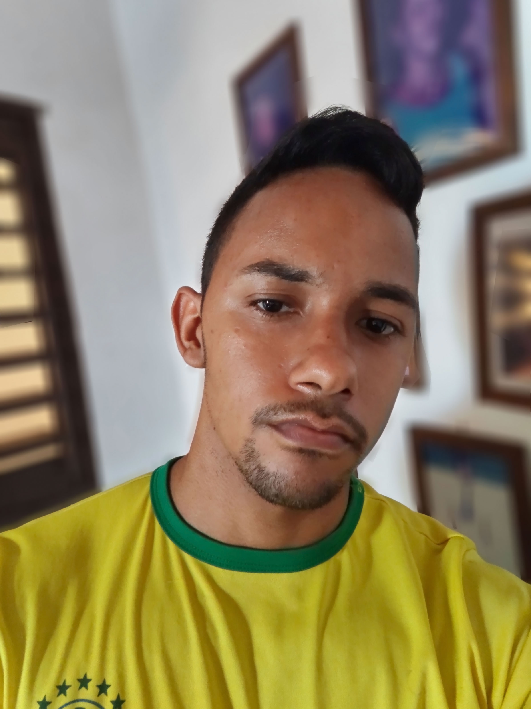

Opa! Meu nome é Gilson Kedson dos Santos Silva, tenho 20 anos e estou cursando Bacharelado em Ciências e Tecnologia pela UFRN. Sou natural de Natal, mas desde que nasci moro em Ceará-Mirim. Antes da UFRN, tive a oportunidade de concluir o curso de Informática integrado ao ensino médio, onde criei o gosto pelas áreas tecnológicas. Participei de projetos e também estagiei ao longo do curso e isso fez com que o interesse pela área ficasse mais forte.